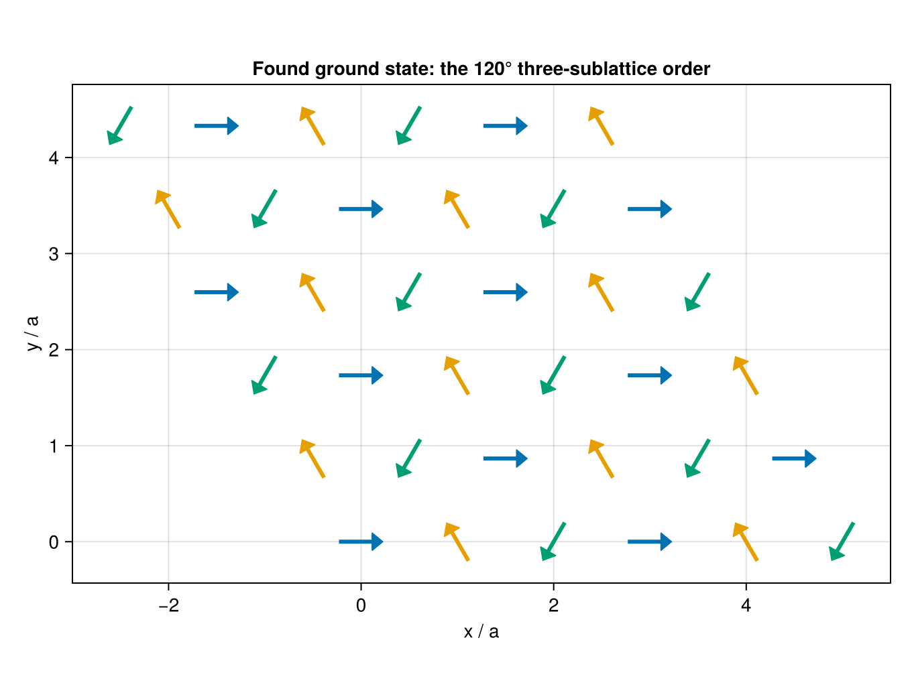
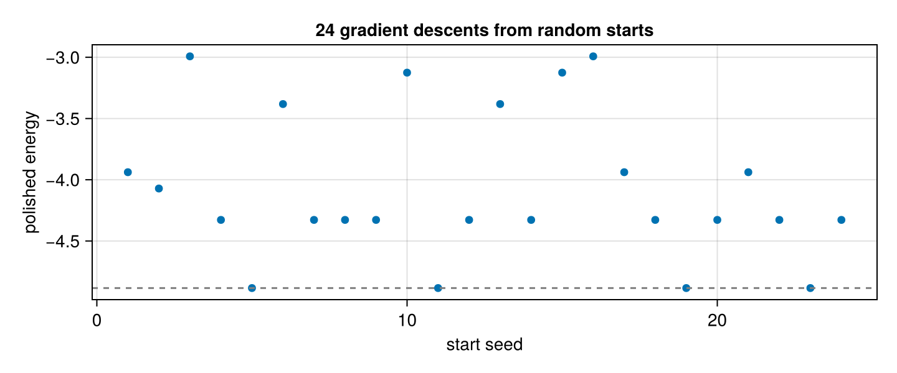
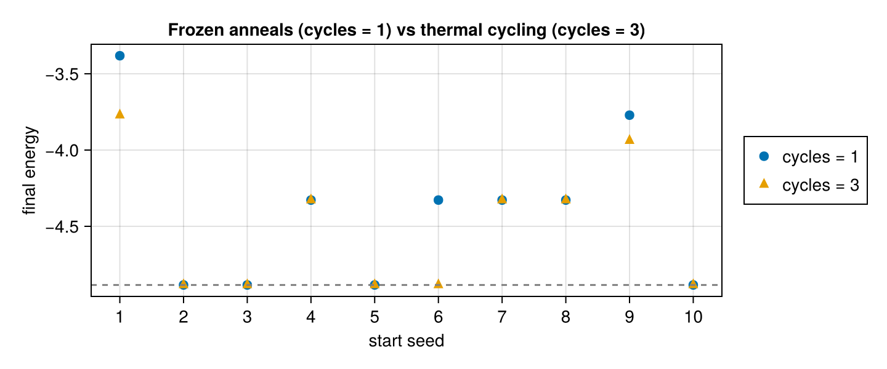

Ground states
Two entry points find minimum-energy spin configurations numerically (design record: docs/specs/ground-state-search.md):
minimize_energy— deterministic local minimization: projected gradient descent on the product of unit spheres (Barzilai–Borwein steps with a nonmonotone Armijo safeguard; no optimizer dependency, no RNG in the descent). It polishes the nearest stationary point to machine precision.find_ground_state— stochastic global search: independent multi-start simulated annealing (optionally with thermal cycling), each start polished by the same descent, threads-parallel and bit-reproducible for a fixed seed.
Both return a GroundStateResult: the winning configuration plus the full per-start energy table — the cheap self-diagnostic for landscape ruggedness.
Both are spin-only: the descent lives on the product of unit spheres, and a joint spin–lattice Hamiltonian is refused rather than minimized at a silent $u = 0$. Pass the clamped-ion sub-model instead — SLCE.restrict(model, :spin) is the exact $u = 0$ section of the same fit (joint models).
A worked example: the triangular-lattice antiferromagnet
The classic frustration benchmark. Antiferromagnetic nearest-neighbor bonds on a triangular lattice cannot all be satisfied — no two-sublattice Néel state exists — and the classical compromise is the 120° three-sublattice order, with energy per site exactly $-\tfrac{3}{2}J$ (three bonds per site, every neighbor pair at $\cos 120° = -\tfrac12$). The search knows none of this; it gets couplings and a lattice, and the physics has to come out.
Build the model through the same fitted surface as production runs (one atom in a hexagonal cell; the six in-plane neighbors are periodic images, so the basis needs images = AllImages(); hexagonal symmetry folds all six bonds into one SALC — a single coefficient, > 0 ⇒ antiferromagnetic):
using SLCEMonteCarlo, SLCE
import Spglib # activates SLCE's SpglibBackend extension
using LinearAlgebra, StaticArrays
lat = Lattice([1.0 -0.5 0; 0 sqrt(3)/2 0; 0 0 4.0]) # columns a₁, a₂, a₃
cell = Crystal(lat, reshape([0.0, 0.0, 0.0], 3, 1), [1], ["Fe"])
spec = BasisSpec(; nbody = 2, cutoff = 1.1, lmax = [1], soc = false)
basis = SLCEBasis(cell, spec; backend = SpglibBackend(), images = AllImages())
model = SLCEModel(basis, 0.0, [0.01]) # J > 0 ⇒ frustrated
H = TiledHamiltonian(model; dims = (6, 6, 1)) # 36 sites; 6 is divisible by 3,
# so the 3-sublattice order fits
aligned = SLCEMonteCarlo.from_matrix(repeat([0.0, 0.0, 1.0], 1, n_sites(H)))
J = total_energy(H, aligned) / (3 * n_sites(H)) # the physical coupling
gs = find_ground_state(H; nstarts = 8, seed = 11)
(E_per_site = gs.energy / n_sites(H), target = -1.5 * J,
spread = maximum(gs.energies) - minimum(gs.energies))(E_per_site = -0.05196152422706618, target = -0.051961524227066416, spread = 6.283862319378386e-14)The energy lands on the analytic $-\tfrac{3}{2}J$ to machine precision, and the per-start spread at $\sim 10^{-13}$ says all eight independent starts found the same state (each in its own global spin frame — the Heisenberg ground state is degenerate under rotations). Now look at the configuration itself. The spins all lie in one plane; below they are projected onto it and colored by grouping the sites on their spin direction — three groups of 12 emerge, mutually at $\cos^{-1}(-\tfrac12) = 120°$, arranged as three interpenetrating ferromagnetic sublattices:
using CairoMakie
CairoMakie.activate!(type = "png")
cfg = gs.config
pos = cartesian_positions(supercell_crystal(cell, (6, 6, 1))) # site order matches H
# orthonormal basis of the common spin plane → in-plane components (u, v)
p1 = normalize(cfg[1])
p2 = let e = cfg[findfirst(e -> abs(dot(e, p1)) < 0.9, cfg)]
normalize(e - dot(e, p1) * p1)
end
u = [dot(e, p1) for e in cfg]
v = [dot(e, p2) for e in cfg]
# group sites by spin direction (the three 120° sublattices)
refs = SVector{3,Float64}[]
for e in cfg
all(dot(e, r) < 0.9 for r in refs) && push!(refs, e)
end
sub = [findfirst(r -> dot(e, r) > 0.9, refs) for e in cfg]
s = 0.45 # arrow length in lattice units
fig = Figure(size = (680, 520))
ax = Axis(fig[1, 1]; xlabel = "x / a", ylabel = "y / a", aspect = DataAspect(),
title = "Found ground state: the 120° three-sublattice order")
arrows2d!(ax, pos[1, :] .- s / 2 .* u, pos[2, :] .- s / 2 .* v, s .* u, s .* v;
color = Makie.wong_colors()[sub])
fig
Frustrated but unfrustrating: on this landscape the plain multi-start already succeeds every time. The rest of this page is about the landscapes where it does not.
Why a local polish is not enough
The demonstration model for this page is the same deliberately nasty fixture as the parallel-tempering guide: random anisotropic pair couplings up to $l = 2$, whose landscape has several competing basins:
using SLCEMonteCarlo, SLCE
using LinearAlgebra, Random
lat = Lattice(Matrix(3.0 * I(3)))
cell = Crystal(lat, [0.2 -0.2; 0.0 0.0; 0.0 0.0], [1, 1], ["Fe"])
basis = SLCEBasis(cell, BasisSpec(; nbody = 2, cutoff = 1.5, lmax = [2],
soc = true))
model = SLCEModel(basis, 0.0, 0.05 .* randn(MersenneTwister(0), n_salcs(basis)))
H = TiledHamiltonian(model; dims = (2, 1, 1))Gradient descent alone lands wherever its random start points — rerunning minimize_energy across seeds maps out the local minima:
using CairoMakie
CairoMakie.activate!(type = "png")
seeds = 1:24
locals = [minimize_energy(H; seed = s).energy for s in seeds]
E0 = minimum(locals)
fig = Figure(size = (720, 300))
ax = Axis(fig[1, 1]; xlabel = "start seed", ylabel = "polished energy",
title = "24 gradient descents from random starts")
scatter!(ax, collect(seeds), locals; markersize = 9)
hlines!(ax, [E0]; linestyle = :dash, color = :gray)
fig
Every point is a converged stationary point (|grad| ≤ gtol), yet they spread over several distinct energy levels — only some starts reach the dashed lowest level. A single local descent answers "what basin was I in?", not "what is the ground state?".
Global search: multi-start annealing + polish
find_ground_state anneals nstarts independent chains down a temperature ladder (reusing the Metropolis/overrelaxation sweeps of run_mc), then polishes each cold configuration deterministically and keeps the best:
fgs = find_ground_state(H; nstarts = 16, seed = 7)GroundStateResult: 4 sites, 16 start(s), 16 converged, seed 7
E = -4.884355529 |grad| = 9.36e-08 converged (12 iterations, start 15)
start E E - E_best |grad| conv
15 -4.884355529 0 9.36e-08 yes
3 -4.884355529 3.553e-15 1.56e-07 yes
16 -4.884355529 2.043e-14 4.14e-07 yes
14 -4.884355529 3.73e-14 5.11e-07 yes
2 -4.32790068 0.5565 5.47e-08 yes
11 -4.32790068 0.5565 3.24e-07 yes
4 -4.32790068 0.5565 4.06e-07 yes
1 -4.32790068 0.5565 5.76e-07 yes
10 -4.32790068 0.5565 4.62e-07 yes
6 -4.32790068 0.5565 6.07e-07 yes
12 -4.32790068 0.5565 6.49e-07 yes
13 -4.32790068 0.5565 7.65e-07 yes
5 -3.771445831 1.113 1.45e-07 yes
9 -3.771445831 1.113 6.93e-08 yes
7 -3.771445831 1.113 6.45e-07 yes
8 -3.771445831 1.113 6.81e-07 yes
The printed table is the degeneracy diagnostic: identical energies are the same basin (or symmetry copies — an isotropic model's ground state is only defined up to a global rotation, so configs may differ while energies coincide); a wide spread says the landscape is rugged and deserves more starts, cycles, or the PT recipe below. Runs are bit-identical for a fixed seed regardless of ntasks / thread count, and the default seed is drawn fresh per call and recorded in the result, exactly as in run_mc.
The default ladder is a geometric 20-rung sweep over three decades below a crude per-site energy scale of the model — fine for a first look; pass an explicit kT ladder for production work.
Thermal cycling
A single anneal that freezes into a false basin stays there. Independent restarts (nstarts) attack this globally but discard everything a run has found; thermal cycling (Möbius et al., PRL 79, 4297 (1997)) is the established middle ground — re-heat partway up the ladder and cool again, keeping the best cold-end state across cycles. With a deliberately short, cold ladder (so that single anneals frequently freeze), extra cycles rescue several frozen starts and — since the best-of-cycles state is kept — never lose ground:
kts = 0.6 .* 0.3 .^ range(0, 1; length = 5) # short & cold on purpose
cyc_seeds = 1:10
one_cycle = [find_ground_state(H; kT = kts, anneal_sweeps = 20, nstarts = 1,
seed = s, cycles = 1).energy for s in cyc_seeds]
three_cycles = [find_ground_state(H; kT = kts, anneal_sweeps = 20, nstarts = 1,
seed = s, cycles = 3).energy for s in cyc_seeds]
fig = Figure(size = (720, 300))
ax = Axis(fig[1, 1]; xlabel = "start seed", ylabel = "final energy",
xticks = collect(cyc_seeds),
title = "Frozen anneals (cycles = 1) vs thermal cycling (cycles = 3)")
scatter!(ax, collect(cyc_seeds), one_cycle; markersize = 11, label = "cycles = 1")
scatter!(ax, collect(cyc_seeds), three_cycles; markersize = 11, marker = :utriangle,
label = "cycles = 3")
hlines!(ax, [E0]; linestyle = :dash, color = :gray)
Legend(fig[1, 2], ax) # outside the axis — the data fills every corner
fig
reheat controls the re-entry rung (default 0.5 — the geometric middle of the ladder). Re-heating to the very top would just be a restart; partial re-heating keeps the found basin's information while allowing barrier crossings.
The strongest escape: polish a parallel-tempering run
Replica exchange is the principled "temperature up-down" — every replica random-walks the whole ladder (see the parallel-tempering guide). The production recipe for a rugged landscape is therefore: sample with run_pt, then polish every replica deterministically:
ladder = 0.02 .* (0.5 / 0.02) .^ range(0, 1; length = 13) # geometric
pt = run_pt(H; kT = collect(ladder), sweeps_therm = 500, sweeps_measure = 1000,
exchange_interval = 10, seed = 1)
polished = find_ground_state(H; inits = pt.final_configs, anneal_sweeps = 0)GroundStateResult: 4 sites, 13 start(s), 13 converged, seed 17545443696365858093
E = -4.884355529 |grad| = 5.69e-08 converged (17 iterations, start 11)
start E E - E_best |grad| conv
11 -4.884355529 0 5.69e-08 yes
9 -4.884355529 3.553e-15 1.26e-07 yes
2 -4.884355529 4.441e-15 2.13e-07 yes
5 -4.884355529 4.441e-15 1.39e-07 yes
8 -4.884355529 7.994e-15 2.45e-07 yes
1 -4.884355529 8.882e-15 2.62e-07 yes
7 -4.884355529 2.665e-14 5.05e-07 yes
3 -4.884355529 3.73e-14 3.94e-07 yes
4 -4.884355529 6.75e-14 7.25e-07 yes
6 -4.884355529 1.101e-13 7.24e-07 yes
10 -4.32790068 0.5565 2.04e-07 yes
12 -4.32790068 0.5565 4.04e-07 yes
13 -3.125507355 1.759 5.16e-07 yes
With anneal_sweeps = 0 no further stirring happens — each replica's final configuration goes straight into the RNG-free descent, so this step is fully deterministic. The coldest replicas polish into the ground state; the hot end of the table documents which basins the ladder visited.
Caveats
- This is a heuristic. No finite stochastic search certifies a global minimum. Confidence comes from redundancy: many starts / cycles / PT replicas landing on the same lowest level, and the per-start table making disagreement visible.
- On models with a continuous ground-state degeneracy (any isotropic model: global spin rotations) the energy converges while the configuration is one arbitrary representative of the manifold.
converged = falseon a start means it exhaustedmaxiteror stagnated at the energy-resolution floor — the reported iterate is still the best available; the winning start's flag isGroundStateResult.converged.- Population annealing (resampled parallel annealing) and basin hopping (perturb → minimize → accept) are natural future extensions; today's tools are
nstarts×cycles× the PT recipe.